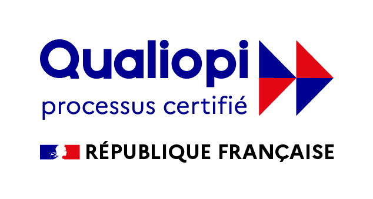

Qui sommes-nous?
Way's UP est un organisme de formation dédié à l'autonomisation et au développement professionnel. En tant que passionnés par l'apprentissage continu, nous sommes fiers de proposer des formations de haute qualité pour aider les individus à atteindre leurs objectifs de carrière. Bien que nous soyons nouveaux sur le marché, notre équipe est composée d'experts possédant une vaste expérience dans les domaines du conseil, du management, de la communication et de l'animation.
Certification Qualiopi
notre organisme est certifié Qualiopi, attestant de la qualité de nos prestations et de notre engagement envers l'amélioration continue. Cette reconnaissance témoigne de notre volonté de fournir des formations de qualité, en répondant aux exigences rigoureuses de Qualiopi. Nous remercions notre équipe, nos formateurs qualifiés et nos partenaires pour leur contribution à cette réussite. Nous restons à votre disposition pour plus d'informations.